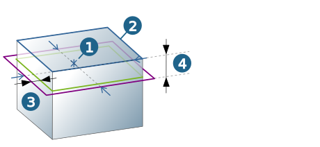

Contours
Contour selection
|
|
The following elements can be selected as a contour: rectangle, rectangle with corner radius, point, arc center and snap point. The contour elements must be level with the Z axis of the machining frame. |
Contour attributes
Select rectangle. Center (1) relative to the machining frame and length of the contour (2) are displayed in the X and Y direction.
Select point, arc center or snap point and specify length of the contour (2) in the X and Y direction. The center (1) is displayed relative to the machining frame.
The length of the contour must be greater than the diameter of the touch probe.
Measure position: Use Inside or Outside to specify whether probing is to be inside or outside. The allowance (3) is added to each side of the length in the X or Y direction ( Outside) or subtracted from it ( Inside).
|
Measuring depth (4): Corresponds to the contour depth. The measuring depth is measured in the center of the ball of the probing tool. It is specified either relative to the contour (option: Relative to contour) or as an absolute value relative to the job frame (option: Absolute (jobframe)). |

|  |